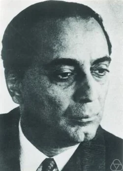
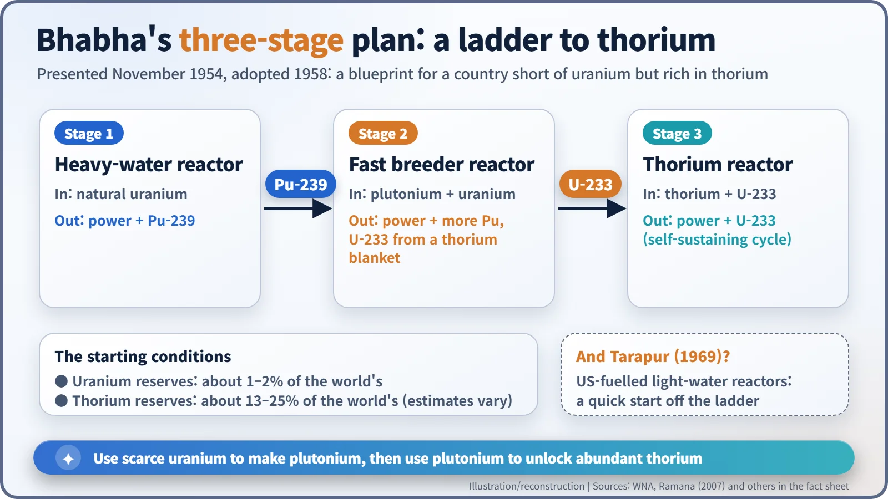
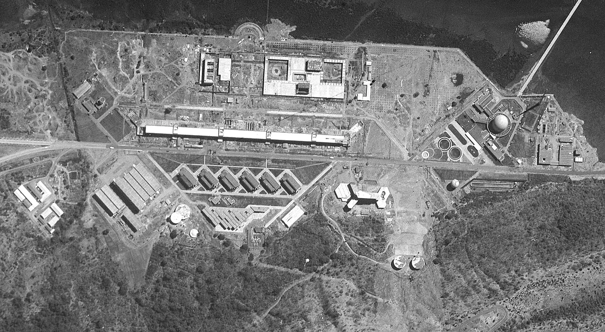
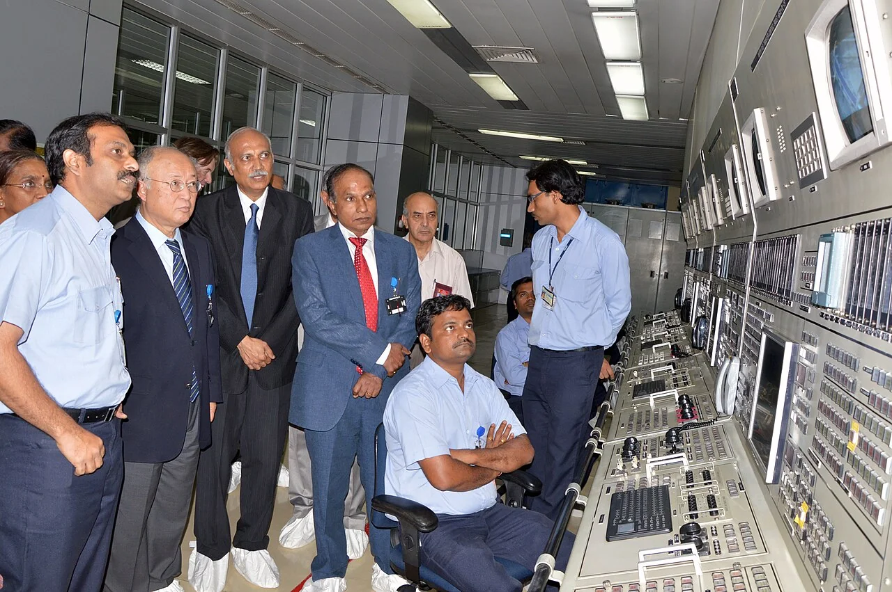
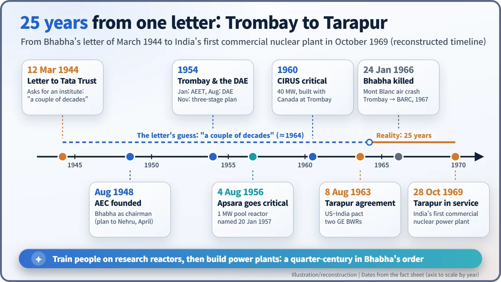

Nuclear History · 193
"Twenty Years from Now" — Homi Bhabha's Plan, the Apsara Reactor and the Tarapur Power Station
A 1944 funding letter predicted nuclear power within a couple of decades; a swimming-pool reactor at Trombay and two US-built boiling water reactors at Tarapur made it happen in 25 years.
In 1944 the physicist Homi Bhabha predicted that India would have its own nuclear experts ready when atomic power arrived "in say a couple of decades". His Trombay team brought India's first reactor, Apsara, to criticality on 4 August 1956, and the US-built Tarapur station began commercial operation on 28 October 1969, 25 years after the letter. Tarapur, though, ran on imported enriched uranium, outside the three-stage plan that Bhabha had drawn up for India's thorium.
A sentence in a funding letter
On 12 March 1944, a young physicist in Bangalore wrote to a charitable trust in Bombay. Homi Jehangir Bhabha (1909–1966) was asking the Sir Dorabji Tata Trust, then chaired by Sir Sorab Saklatvala, to fund an institute for fundamental research. Tucked into the letter was a remarkable sentence:
"Moreover, when nuclear energy has been successfully applied for power production in say a couple of decades from now, India will not have to look abroad for its experts but will find them ready at hand."
That was more than a year before Hiroshima, when nobody anywhere had yet seen a nuclear power station. This is the story of how that prediction came true, and of where reality took a different road from the plan. [1]

Getting ready before independence
Bhabha had made his name at Cambridge studying cosmic rays, the high-energy particles that rain down from space. His letter worked: the Tata Institute of Fundamental Research (TIFR) opened in 1945. After independence he persuaded Prime Minister Jawaharlal Nehru to set up an Atomic Energy Commission in August 1948, with Bhabha as its first chairman. In 1954 came the Atomic Energy Establishment at Trombay, east of Bombay (January), and a Department of Atomic Energy reporting directly to the prime minister (August). [1] [3]
Bhabha's real puzzle was raw materials. India has little uranium but a great deal of thorium in its beach sands. Thorium cannot sustain a chain reaction on its own, but when a thorium-232 nucleus captures a neutron and then undergoes two radioactive decays, it becomes uranium-233, an excellent nuclear fuel. In November 1954 Bhabha set out his answer, the three-stage programme, which the government formally adopted in 1958:
- Natural-uranium heavy-water reactors make electricity and plutonium-239.
- Fast breeder reactors burn that plutonium and turn thorium into uranium-233.
- Reactors running on thorium and uranium-233 complete the ladder.

A swimming pool on Trombay hill
Climbing that ladder needed people first. Early in 1955, the Trombay team decided to make their first reactor a "swimming pool" type: the fuel sits at the bottom of a deep tank of ordinary water, which slows neutrons down (moderator), carries heat away (coolant) and blocks radiation (shield) all at once. At 1 megawatt of heat, it was never meant to generate electricity; it was built for neutron experiments, isotope production and training.
The fuel, about 4.5 kg of highly enriched uranium in thin plates, came from the United Kingdom, because India had no fuel fabrication plant. But Indian scientists and engineers designed and built the reactor, and its control systems were made at TIFR. On the afternoon of 4 August 1956 (at 15:45, according to accounts drawn from the Bhabha Atomic Research Centre), the reactor went critical. It was India's first nuclear reactor. On 20 January 1957, Nehru formally opened the Trombay establishment and named the reactor Apsara, after the celestial water nymphs of Indian mythology. According to a story often told, the name was inspired by the blue Cherenkov glow of the core under water, but that remains an anecdote. [2] [4]
Apsara is often called "Asia's first reactor", which needs a qualifier. The Soviet Union already ran military reactors east of the Urals and in Siberia, so the careful version is "the first reactor in Asia outside the Soviet Union". [4]

A shortcut beside the ladder: Tarapur
Yet India's first nuclear power station was not a stage-one heavy-water reactor. On 8 August 1963, India and the United States signed an agreement for cooperation on the Tarapur Atomic Power Station. General Electric would deliver two boiling water reactors (BWRs, light-water reactors in which water boils inside the core and the steam drives the turbine) on a turnkey basis, and the United States would supply the enriched uranium fuel. Construction began in October 1964 on the coast north of Bombay. Both units reached criticality in February 1969 and entered commercial operation on 28 October 1969. Tarapur became India's first commercial nuclear power station and the first commercial BWR plant in Asia. (Asia's first commercial nuclear plant of any type was Japan's Tokai-1, in 1966.) [5] [6] [7]

Why would Bhabha, the champion of natural uranium, buy imported light-water reactors? Many observers see it as a "quick start": a way to generate power and build operating experience while the long climb continued. There was a cost. Each unit was designed for roughly 200–210 MWe, depending on the source, but recurring technical problems led to operation at 160 MWe. And relying on one country for fuel left supply exposed to politics. After India's first nuclear test in 1974, US fuel deliveries were disrupted and eventually stopped; France, China and Russia later supplied fuel in turn, under International Atomic Energy Agency (IAEA) safeguards. [6]
The clock that stopped on Mont Blanc
Bhabha never saw Tarapur's first electricity. On 24 January 1966, Air India Flight 101, carrying him to an IAEA meeting in Vienna, struck Mont Blanc; all 117 people on board were killed. The official investigation attributed the crash to a misunderstanding between air traffic control and the pilots about the aircraft's position. In January 1967 the Trombay establishment was renamed the Bhabha Atomic Research Centre (BARC), and Vikram Sarabhai (1919–1971) took over the Atomic Energy Commission. [1] [2]

The "couple of decades" in the letter turned out to be 25 years. Apsara worked for more than half a century before it was shut down in June 2009, and on 10 September 2018 its successor, the 2 MW Apsara-U running on Indian-made low-enriched fuel, reached criticality. One scientist's letter had become a blueprint for a nation's nuclear programme. Its final rung, the thorium stage, is still a work in progress. [2]